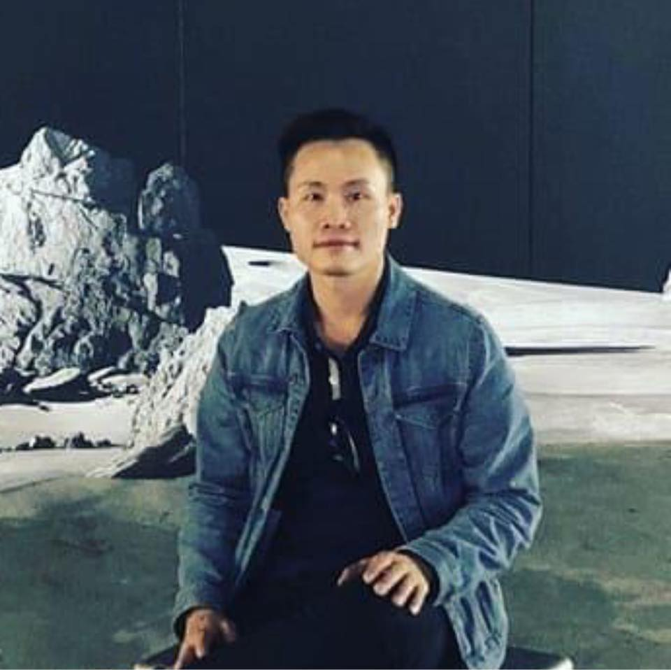

|
Duc Duong
Hi! I'm Duc. I'm an Engineer and Architect. I was born and grew up in a small village in the suburb of Hanoi, Vietnam. I have travelled to 15+ countries and worked different cities such as Hanoi, Ho Chi Minh City in Vietnam, Toulouse and Paris in France, and worked remotely to projects based in Rome (Italia), Atlanta (USA), etc.
I'm currently working as Customer Success Manager and Architect at IBM, specialized Data, AI, and Hybrid Cloud. Before joining IBM, I worked as Deployment Strategist, Data-AI Engineer, Project Manager, Technical Lead, and Technical Trainer for several data platforms such as Airbus Skywise, WFP DOTS with Palantir Technology, and other Cloud Data Platforms with Amazon, Azure, and Databricks Technologies.
Since April 2017, I have been working in developing the projects and products of Data and AI, which are backed by IBM, Palantir, and opensources technologies of AI, Machine Learning, Deep Learning, and Hybrid Cloud. In these projects, besides the engineering and consulting work, I also hold several leadership and management positions such as Senior Manager (at IBM and FPT Software), Lead Data Science and Engineering (Skywise).
At the moment, I am focusing on the topics of Generative AI, Foundation Models, Data-AI deployment strategies, Hybrid AI & Data Platforms, Large Language Models Operations (LLMOps), Machine Learning Operations (MLOps), and Architecture Design Patterns for robust and scalable AI-Data Systems.
Email /
Resume /
LinkedIn /
Github /
Medium /
Twitter
|

|
{kind=link}